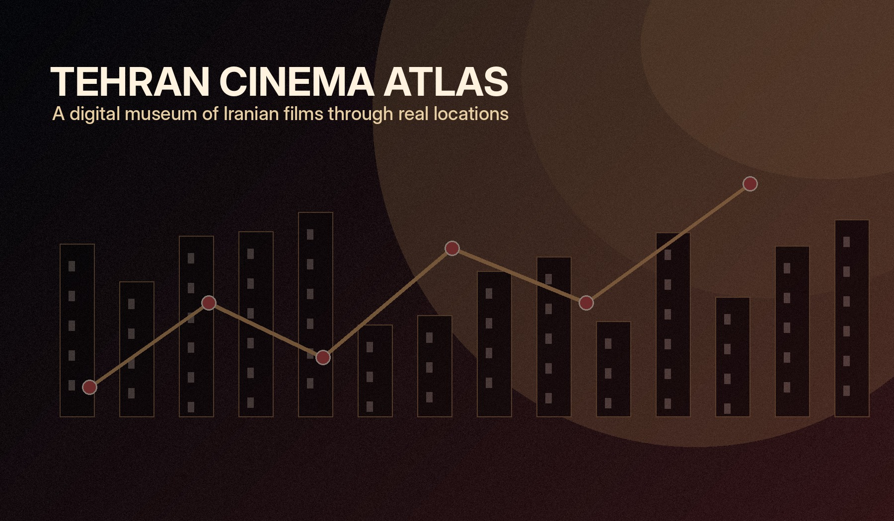
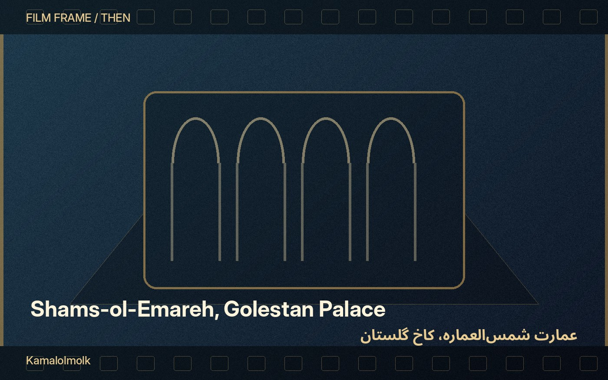
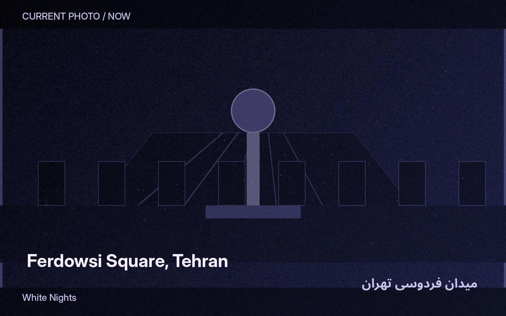
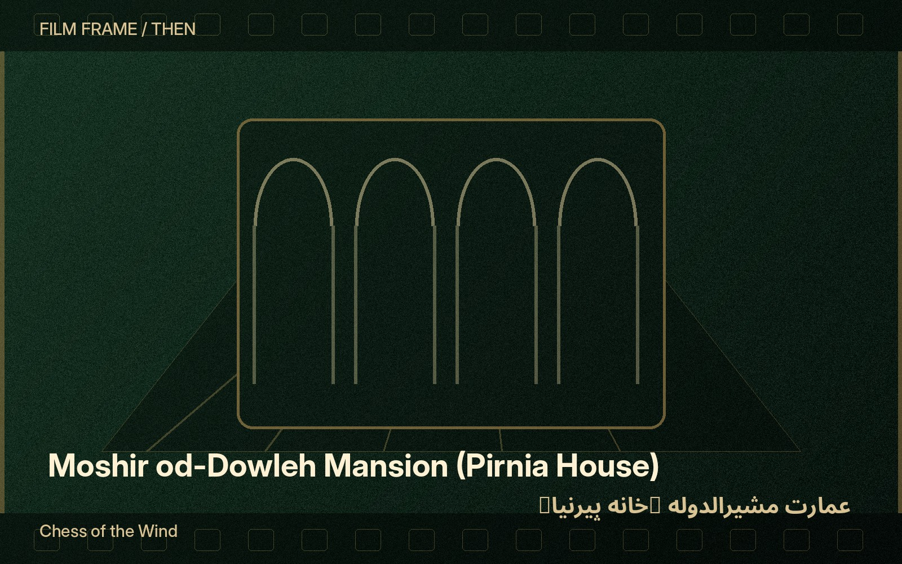
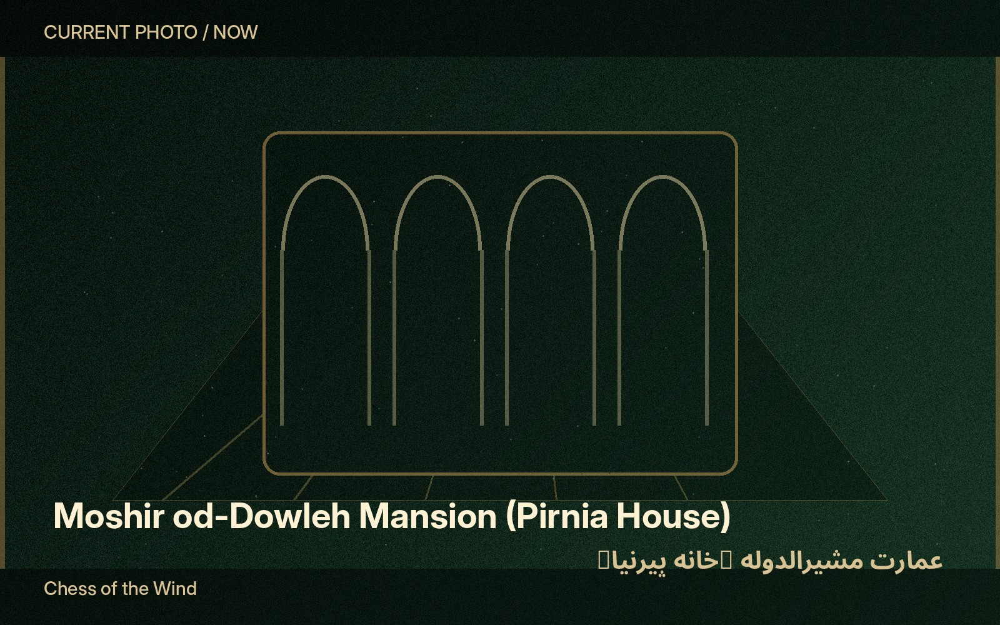
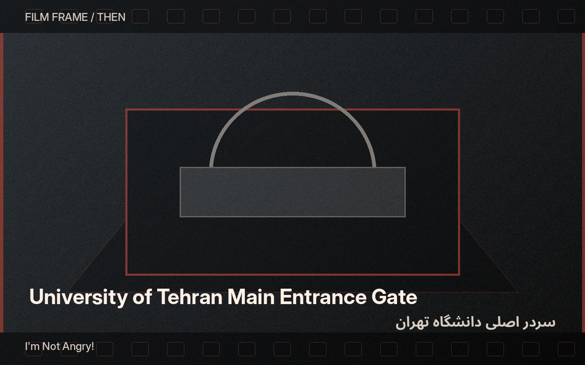
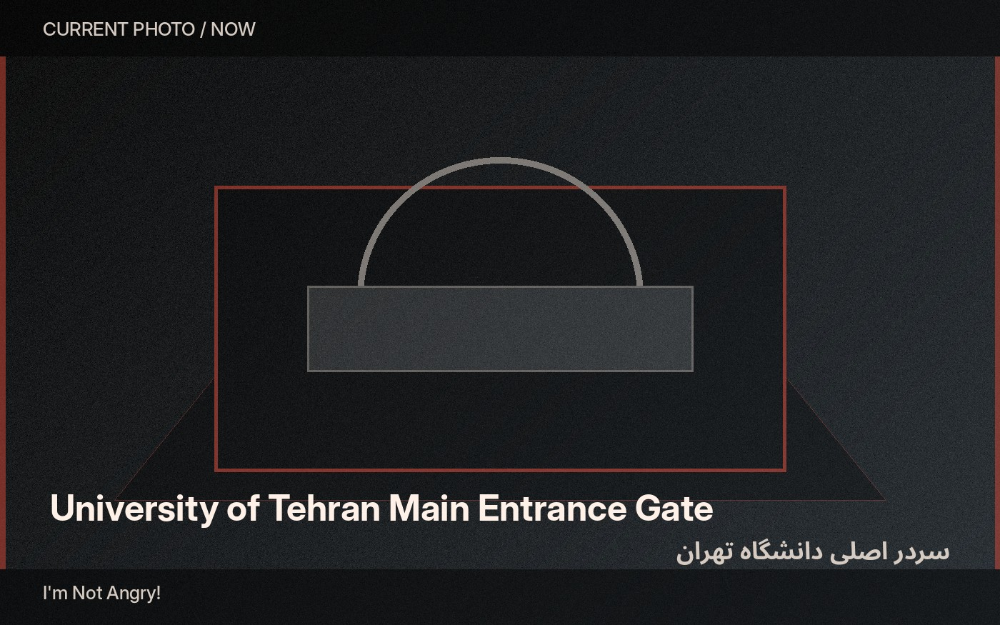

Live Museum of Movie Locations · Tehran
Tehran
Cinema Atlas
اطلس سینمایی تهران
Fifteen screen locations. Three narratives. One changing city.
A digital companion for planning and visiting real Tehran streets, mansions, hotels, university spaces and palace rooms connected to Iranian cinema.



1976—2014
Field Atlas
The city as a living collection
Walk from the film frame into Tehran
The exhibition treats each location as a museum item: documented, placed on a route, interpreted through several stories, and presented at different levels of detail.
Use the site at home to plan a visit, then reopen each location page in the city. Compare the supplied film still with the current photograph, read the catalogue record, open directions, and move through the selected narrative with previous and next controls.
Explicitly framed narratives
Choose how Tehran unfolds
The order, chapter introductions and next/previous links change with the selected narrative.




Then / now / metadata / route
Every location is an active document
Each item includes a film image, a current reference image, coordinates, access notes, evidence, a QR code, a map link, adaptable texts, a small visual challenge, and narrative-aware navigation.
Open a sample locationNine works in the collection
Films that rewrite the same city
Film pages retain a reusable structure while adopting an individual palette, mood and motif system.
2026
Course project
Designed from the LMML requirements
The implementation follows the project specification: 15 real locations, a one-day itinerary, three narratives including a historical timeline, switchable visual themes, adaptive texts, metadata, maps, about, documentation and disclaimer pages.
Read the design rationale